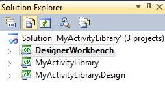
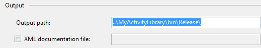
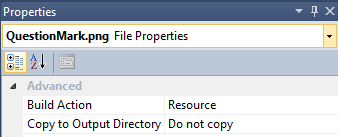
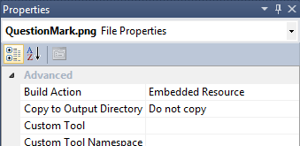

Windows Workflow Foundation (WF4) - Custom Activity Designer
How to create a Custom Activity Designer with Windows Workflow Foundation (WF4)
This sample demonstrates how you can build an activity and activity designer. It includes three projects
- MyActivityLibrary - The activity library project
- MyActivityLibrary.Design - The activity designer project
- DesignerWorkbench - A rehosted designer project useful for testing the activity
Update: The video is slightly out of sync with the current sample but mostly applies still.
Download
video
Step 1: Create the Activity
The first step is to build your activity. Don't create a designer until you are satisifed with the interface to your activity in terms of arguments and properties. This sample includes a native activity named MyActivity which simply returns a string with the activity values.
The activity includes an InArgument and two properties including an enumerated value so you can see how to use these with your activity designer.
public sealed class MyActivity : NativeActivity<string>
{
public MyEnum Option { get; set; }
public bool TestCode { get; set; }
[DefaultValue(null)]
public InArgument<string> Text { get; set; }
protected override void Execute(NativeActivityContext context)
{
this.Result.Set(context,
string.Format("Text is {0}, TestCode is {1}, Option is {2}",
context.GetValue(this.Text), this.TestCode, this.Option));
}
}
public sealed class MyActivity : NativeActivity<string> { public MyEnum Option { get; set; } public bool TestCode { get; set; } [DefaultValue(null)] public InArgument<string> Text { get; set; } protected override void Execute(NativeActivityContext context) { this.Result.Set(context, string.Format("Text is {0}, TestCode is {1}, Option is {2}", context.GetValue(this.Text), this.TestCode, this.Option)); } }
Step 2: Add the Design Project
Visual Studio uses a naming convention to locate an associated designer project. Since our assembly is named MyActivity.dll, Visual Studio will attempt to load MyActivity.Design.dll.
- Select File / Add / New Project
- Choose the Activity Designer Library project template
- Name the project MyActivityLibrary.Design

Step 3: Set the Output Directory
The Workflow Designer looks for the *.Design dll in the same directory as the activity assembly. Modify the build output so that it builds in that folder. Be sure to modify both Debug and Release settings.

Step 3: Add RegisterMetadata method
The activity designer class should include a method to register the metadata for that designer.
C#
Edit|Remove
csharp
public partial class MyActivityDesigner
{
public MyActivityDesigner()
{
this.InitializeComponent();
}
public static void RegisterMetadata(AttributeTableBuilder builder)
{
builder.AddCustomAttributes(
typeof(MyActivity),
new DesignerAttribute(typeof(MyActivityDesigner)),
new DescriptionAttribute("My sample activity"),
new ToolboxBitmapAttribute(typeof(MyActivity), "QuestionMark.png"));
}
}
public partial class MyActivityDesigner
{
public MyActivityDesigner()
{
this.InitializeComponent();
}
public static void RegisterMetadata(AttributeTableBuilder builder)
{
builder.AddCustomAttributes(
typeof(MyActivity),
new DesignerAttribute(typeof(MyActivityDesigner)),
new DescriptionAttribute("My sample activity"),
new ToolboxBitmapAttribute(typeof(MyActivity), "QuestionMark.png"}
Step 4: Add Metadata Class
public partial class MyActivityDesigner
{
public MyActivityDesigner()
{
this.InitializeComponent();
}
public static void RegisterMetadata(AttributeTableBuilder builder)
{
builder.AddCustomAttributes(
typeof(MyActivity),
new DesignerAttribute(typeof(MyActivityDesigner)),
new DescriptionAttribute("My sample activity"),
new ToolboxBitmapAttribute(typeof(MyActivity), "QuestionMark.png"));
}
}
public partial class MyActivityDesigner { public MyActivityDesigner() { this.InitializeComponent(); } public static void RegisterMetadata(AttributeTableBuilder builder) { builder.AddCustomAttributes( typeof(MyActivity), new DesignerAttribute(typeof(MyActivityDesigner)), new DescriptionAttribute("My sample activity"), new ToolboxBitmapAttribute(typeof(MyActivity), "QuestionMark.png"}
Add a class that implements System.Activities.Presentation.Metadata.IRegisterMetadata. This class will be invoked at runtime to add attributes to the activity class. In the sample, I've added a static method called RegisterAll() which will register all of the activities contained in this library. This method is called from the test designer.
public sealed class MyActivityLibraryMetadata : IRegisterMetadata
{
public void Register()
{
RegisterAll();
}
public static void RegisterAll()
{
var builder = new AttributeTableBuilder();
MyActivityDesigner.RegisterMetadata(builder);
// TODO: Other activities can be added here
MetadataStore.AddAttributeTable(builder.CreateTable());
}
}
public sealed class MyActivityLibraryMetadata : IRegisterMetadata { public void Register() { RegisterAll(); } public static void RegisterAll() { var builder = new AttributeTableBuilder(); MyActivityDesigner.RegisterMetadata(builder); // TODO: Other activities can be added here MetadataStore.AddAttributeTable(builder.CreateTable()); } }
Step 5: Add an activity image to your Design Project

Step 6: Add the ToolboxBitmap
To support a Toolbox Bitmp you will need to add the activity image to your activity library project also and set the Build Action to Embedded Resource. The sample application has included the file QuestionMark.png as a linked file from the design project.

Optionally, add the ToolboxBitmap attribute to your activity class. However the DesignerMetadata can add the attribute without causing your Activity library to have a reference to System.Drawing.
/// <summary> /// MyActivity is a sample to show you how to create the designer /// </summary> /// <remarks> /// TODO: Be sure the build action for your bitmap is set to Embedded Resource /// NOTE: The bitmap must be at the same location as the class /// NOTE: If you use ToolboxBitmap here your activity assembly and those who use it will have to reference System.Drawing /// Instead you can add the ToolboxBitmapAttribute when you register the metadata to avoid this. /// [ToolboxBitmap(typeof(MyActivity), "QuestionMark.png")] /// </remarks> public sealed class MyActivity : NativeActivity<string> {
/// <summary> /// MyActivity is a sample to show you how to create the designer /// </summary> /// <remarks> /// TODO: Be sure the build action for your bitmap is set to Embedded Resource /// NOTE: The bitmap must be at the same location as the class /// NOTE: If you use ToolboxBitmap here your activity assembly and those who use it will have to reference System.Drawing /// Instead you can add the ToolboxBitmapAttribute when you register the metadata to avoid this. /// [ToolboxBitmap(typeof(MyActivity), "QuestionMark.png")] /// </remarks> public sealed class MyActivity : NativeActivity<string{
Step 7: Create The Designer
Step 8: Configure the Designer project for debugging
There are two options for debugging your designer project. The recommended approach is to debug with a re-hosted designer application such as the one included with this application. Set the project properties as shown for debugging support.

To test with Visual Studio it is best to use the Experimental Instance option. Debugging with Visual Studio can take a long time so it is best to test by starting without debugging.